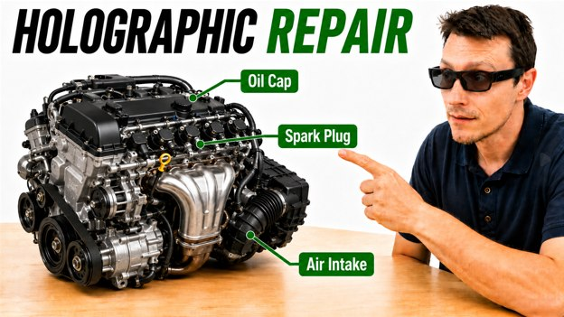
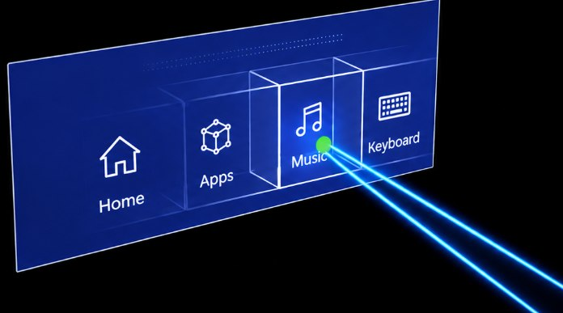
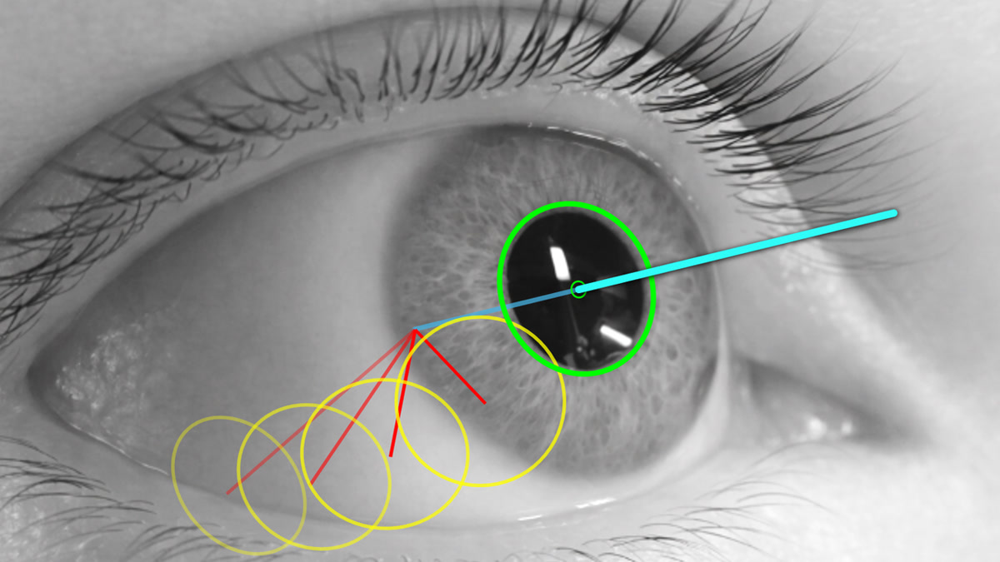
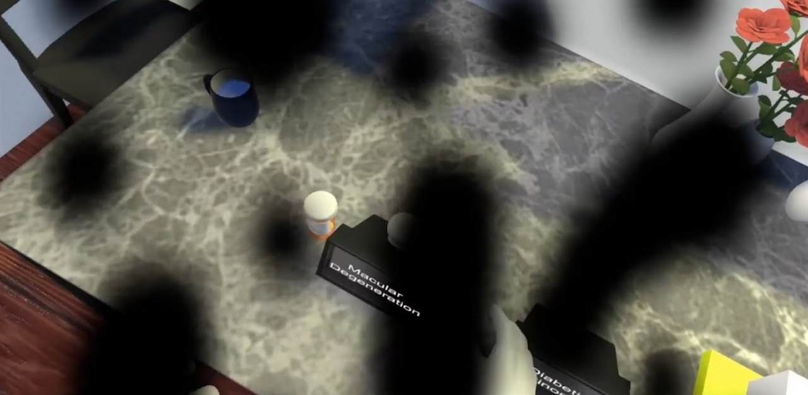
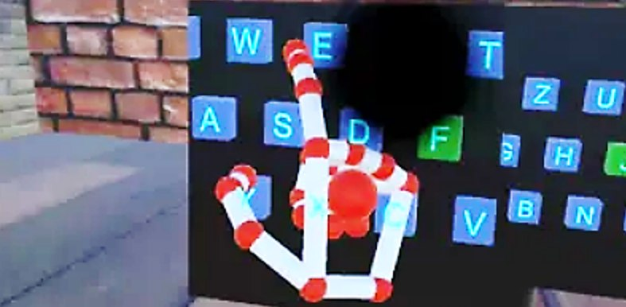

Eye Tracking, XR, and Interaction:
Open Source Research and DIY
I develop open-source software for eye tracking, augmented reality, virtual reality, and other user interface technology. This site is organized into tutorials and DIY instructions on these topics to improve accessibility and education. Each topic has sample code, text tutorials, images, and/or videos for you to get started.

Jason Orlosky, PhD
To help support this software and other open-source projects, please consider subscribing to or joining my YouTube channel.
Tutorials and DIY:
Other useful research and projects:




